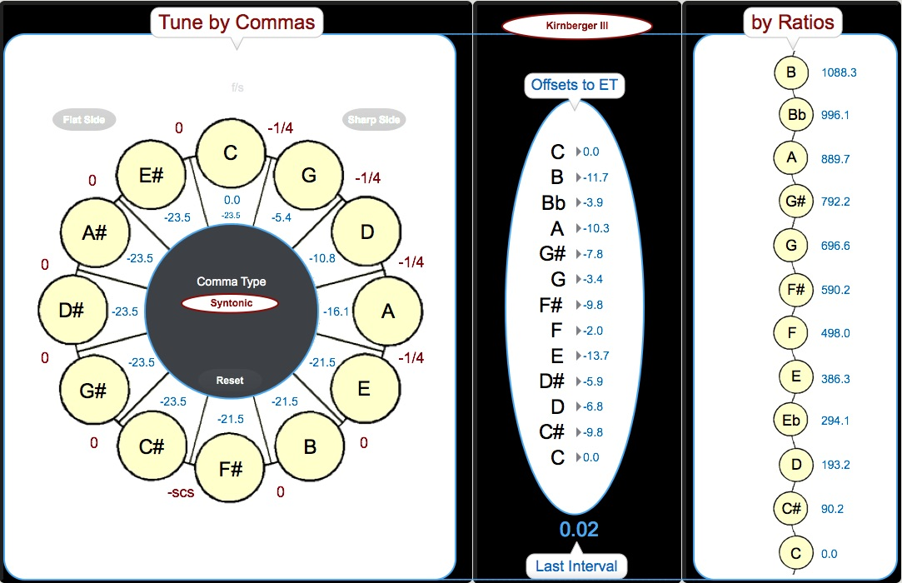

bitSuite
“Create” Window
Overview
The “create” interface allows the user an opportunity to build their own system using principles of historical tuning, or to look more closely at the intricacies of the preset tunings in bitTemper.

The “create” interface includes three panels: Tune by Comma, Offsets to ET, and By Ratios. Each panel provides a different perspective on the underlying structure of the selected temperament, and the Tune by Comma and By Ratio panels provide two different modes of tuning. Any changes made in this window will be reflected across all three panels. Note, only some of the parameters can be altered.
In the “Temperament” menu (showing "Kirnberger III" in the image above), the bottom six temperaments are built using “ratios” tool rather than the “commas” tool. For example, choosing “Pythagorean” from the lower section of the menu, rather than the upper section, describes each pitch as a ratio over the fundamental (as represented in the right panel), rather than compressions of the perfect fifth as represented on the left panel.
Tune by Comma
At its most basic, a comma is the difference between a single note tuned two different ways. This is useful for understanding the differences between enharmonic equivalents: Gb and F# may be tuned differently, for example, depending on the system employed. bitTemper uses two types of commas, Pythagorean (resulting from the discrepancy between octaves and fifths, 23.5 cents) and Syntonic (between fifths and thirds, 21.5 cents). There are many other commas as well. Pythagorean and Syntonic commas are generally collapsed into one when tuning keyboards since they are so close, but for the purpose of illustration we’ve included them in bitTemper to avoid any unexpected mathematical results.
For more information about commas, read more here or here. To navigate the Tune by Comma panel, see the examples below.
Offsets to ET
The middle column displays each pitch’s offset from its ET equivalent. The “Last Interval” figure at the bottom of the panel uses the unit of the half-step, NOT cents. This is because the units are MIDI steps, where one increment corresponds to a semitone.
The bitSuite apps are designed to represent these quantities in different ways, some common and some more technical. This is why, for example, bitString has both a sonogram and a spectrogram. In music production, notes are often represented and MIDI values, with middle C as 60.
It can also be informative to relate MIDI values to known intervals. For example, 4 semitones/MIDI steps is a major third, so 4.5 is a “bigger” major third. It is easier to understand this interval at quick glance than if it were given as 450 cents.
By Ratios
In addition to tuning in the “Tune by Commas” panel, The user can click on “by Ratios” to look at and manipulate any given ratio. The By Ratios column provides a value for cents between the selected note and the low C of the temperament for each pitch, simply for illustration purposes.
The higher up from C, the greater the distance in cents, through that offset distance is not always uniform. It is possible to look at these values as ratios (upper partials over lower partials) by clicking on the menu to the left of the pitches. This will show how using these ratios will change the distance of a pitch from its ET equivalent. As a test, select Equal Temperament from the bottom of the drop-menu and see how each semitone is tuned using the same ratio.

Note: the titles for Tune by Commas and by Ratios are actually buttons that change the focus of the window to that particular tuning strategy; for instance, if you don't see the ratio menu values in the by Ratios pane, click on by Ratios and that panel will become active, revealing those menus. Similarly, click on Tune by Commas to switch to that view, revealing the comma menus for each fifth around the perimeter of the circle.